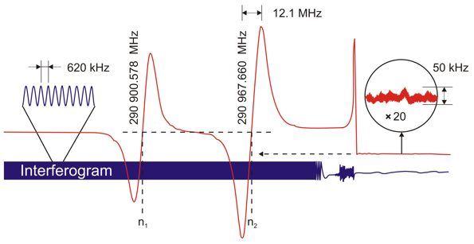
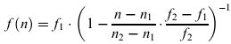

The BWO radiation frequency scanning is performed by a smooth mechanical
move of one of the Fabry-Perot cavity mirrors. The Michelson interferometer
output signal is recorded simultaneously with lines of studied and reference
molecular
spectra. Line positions in the recorded spectra can be determined
relative to interferometer fringes with an uncertainty of 0.01 fraction of
its period
or ~6 kHz. It allows calculating accurately from the tabulated frequencies
of two observed references lines both an effective value of the Fabry-Perot
cavity length (L) and a BWO frequency change corresponding to one period
of the interferogram.
Since L is permanently
changing in the course of the spectrum record, the absolute frequency for each
given point n of the recorded spectra is given by the equation:
,
where f1 and f2 are the reference line tabulated frequencies; (n2 – n1)
is the decimal number of the interferogram periods between these reference lines;
n is the position of a given point in the interferogram period decimal number.
The right side of the figure demonstrates stability of BWO frequency locked
to the cavity eigen mode. After two reference lines were recorded the movable
mirror of the cavity was stopped and returned back to the position where
the BWO frequency corresponds to some point at the
slope
of the second reference line. Then the mirror position was stable for some
time, which is confirmed by stable level of the interferometer output
signal. The BWO frequency fluctuations were transformed by the line slope
into the
absorption signal amplitude fluctuations. These fluctuations are shown
in the insertion magnified by 20-X. Known width of the reference line (~12
MHz) permits estimating the magnitude of frequency deviations of locked BWO not
exceeding 50 kHz.
For more details see [Ref.
4 (2007)]. |